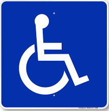
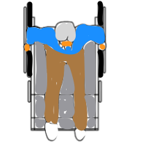

Rapid Flashing Beacons Help Those Who Need It Most
Bridgeway should be enjoyed by everyone, including those with the most
limited mobility. Flashing signs alert drivers to stop at the stop line
even before observing the pedestrian in the crosswalk.
See
NACTO Active Warning Beacon to learn more.

An accessible parking space next to crosswalk provides the most convenient access to
both sides of the street.

Wheelchair players also move slower than the average pedestrian.